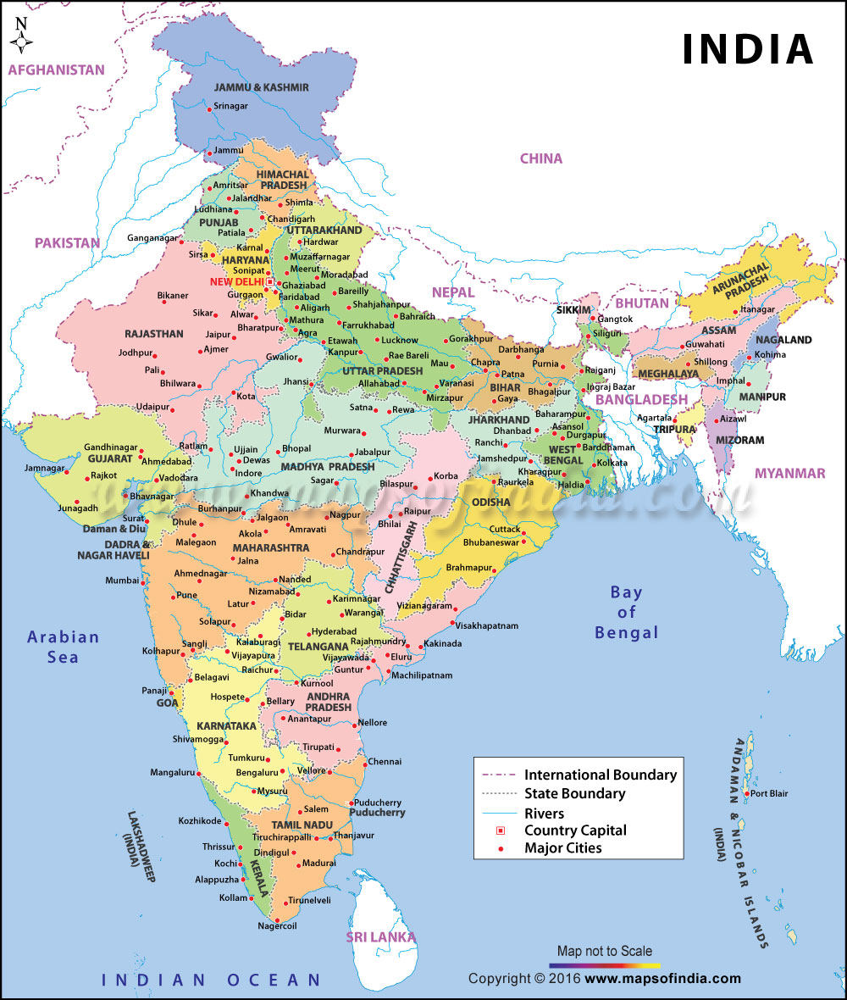

India
Politics in India take place within the framework of its constitution, because India is a federal parliamentary democratic republic, in which the President of India is the head of country and the Prime Minister of India is the head of the government. India follows the dual polity system, i.e. a double government which consists of the central authority at the center and states at the periphery. The constitution defines the organization powers and limitations of both central and state governments, and it is well-recognized, rigid and considered supreme; i.e. laws of the nation must conform to it.
There is a provision for a bicameral legislature consisting of an Upper House, i.e. Rajya Sabha, which represents the states of the Indian federation and a Lower House i.e. Lok Sabha, which represents the people of India as a whole. The Indian constitution provides for an independent judiciary, which is headed by the Supreme Court. The court's mandate is to protect the constitution, to settle disputes between the central government and the states, to settle inter-state disputes, to nullify any central or state laws that go against the constitution, and to protect the fundamental rights of citizens, issuing writs for their enforcement in cases of violation.[1]
Governments are formed through elections held every five years (unless otherwise specified), by parties that secure a majority of members in their respective lower houses (Lok Sabha in the central government and Vidhan Sabha in states).
India had its first general election in 1951, which was won by the Indian National Congress, a political party that went on to dominate subsequent elections until 1977, when a non-Congress government was formed for the first time in independent India. The 1990s saw the end of single-party domination and the rise of coalition governments. The elections for the 16th Lok Sabha, held from April 2014 to May 2014, once again brought back single-party rule in the country, with the Bharatiya Janata Party being able to claim a majority in the Lok Sabha.[2]

National Symbols
| National Anthem | Jana-gana-mana |
| National Song | Vande Mataram |
| National Bird | Peacock |
| National Animal | Tiger |
| National Flower | Lotus |
{kind=link}